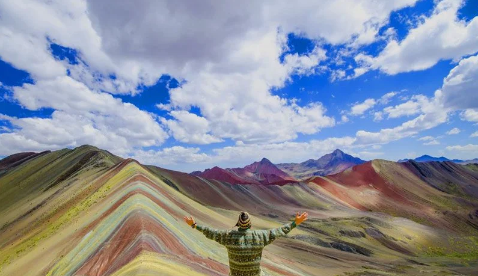
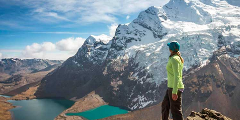
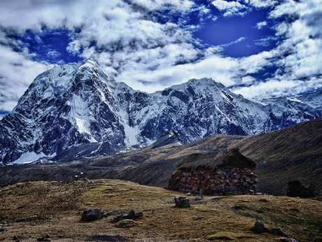
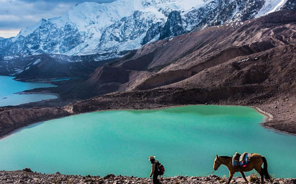
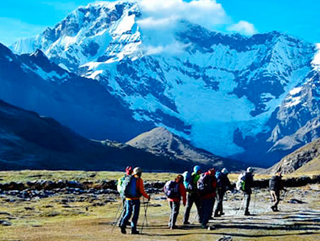

Inca Route: Start
Our TourPeruTravellers Itinerary :
1.- CUSCO – TINQUI – UPIS.
2.- UPIS – LAGUNA AUSANGATE Q’OCHA.
3.- LAGUNA AUSANGATE Q’OCHA – QAMPA.
4.- Q’AMPA – PACCHANTA.
5.- PACCHANTA – CUSCO
In TourPeruTravellers, we offer you this magnificent inka route where u enjoy mountains, archaeological sites
Our TourPeruTravellers Itinerary :
1.- CUSCO – TINQUI – UPIS.
2.- UPIS – LAGUNA AUSANGATE Q’OCHA.
3.- LAGUNA AUSANGATE Q’OCHA – QAMPA.
4.- Q’AMPA – PACCHANTA.
5.- PACCHANTA – CUSCO
 We leave Cusco very early in the morning for our three -hour trip by private transport to the small town of Tinqui (3,800 meters/12,464 feet). As Tinqui is located on the new interoceanic road, it can now be much faster than in previous years. We pass through beautiful landscapes and several traditional peoples such as Urcos, Cattca and Ocangate. After lunch in Tinqui, the first 3 hours of the road are wonderful prelude to the magnificent landscape of the Vilcanota mountain range, with excellent views of Ausangate. We will walk two more hours until we reach the hot springs in Upis (4,400 meters/14,432 feet), which offer fantastic views of Ausangate at the end of the valley. We will camp here at night (4-5 hours of trekking).
 In the morning we will cross the ABRA de Arapa (4,850 meters/ 15,908 feet). From here, we continue 3 and a half hours descending through the valley, passing through the green lagoon of Puqa q’ocha until we reach the Turquoan waters of the Jatun Puqa q’ocha lagoon. Next, we will upload the second open of Apuchata (4,900 meters / 16,072 feet), with a view to the impressive Ausangate Q’ocha lagoon and its turquoise blue waters. This lagoon feeds on the snow that melts from the . We will camp here the second night.
 From the lagoon we ascend to the Abra Palomani (5,200 meters/ 17,056 feet) - the highest point of the walk. From the Abra we follow the path to the valley where we can rest and have lunch. In the afternoon you can enjoy the views of the snowfall three peaks and Punta Puca. We will continue through the wide green valley of Pampa Jutunpata and above through the Q’ampa River valley. We will spend the third night in this area.

After passing through the small community of Q’ampa we will head northwest to the last pass of this hike – Q’ampa Pass (5,000 meters/16,400 feet). We will see several lagoons of different colors and we will have lunch next to Q'oma Q'ocha. We will walk for several hours before reaching the small town of Pacchanta. We can enjoy the hot springs for a couple of hours and even have a well-deserved beer! We will set up camp near Pacchanta and have the afternoon free to explore this interesting Andean town. (You have the option of staying in a basic hostel tonight).
 There are 3 hours of walking walk to Tinqui, where we will have time to explore this traditional Andean town before taking our mobility back to Cusco, arriving at approximately 18.00
Our programme include:
➢ Transportation and return.
➢ Cook with experience in routes.
➢ 4 breakfasts, 4 lunches, 4 dinners
➢ Horses (quipment, food, and 5 to 6 kilos of customer luggage (includes Sleeping)).
➢ Camp equipment (tents and shades).
➢ Income.
Our programme No include:
➢ Breakfast the first day, lunch of the last day.
➢ Sleeping bag.
➢ Extra expenses.
We recommend:
➢ Walking shoes.
➢ Additional clothing for walking days.
➢ Light clothing.
➢ Water bottle.
➢ Rain jacket, cap, sunscreen, sunglasses.
➢ Chocolates, snacks.
➢ Photographic camera.
➢ Extra money in soles and dollars.
➢ Walking canes.